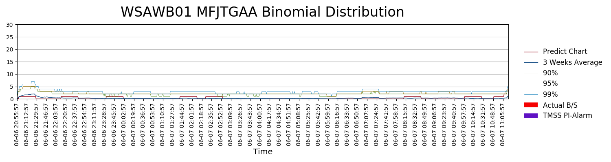
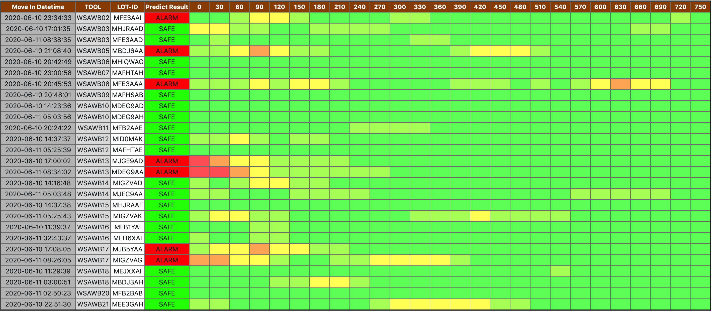

The calendar result showing introduction:
The calendar result showing introduction:This project is aimed to detect any anomly situation before B/S (Wire breakage or Machine stop unexpectedly)
Here are all the prediction results we have:
You will see the similar graph like this: The calendar result showing introduction:
| Confusion Matrix | Actual |
|---|
| Predict |
|
|---|
After you select dates and click 'Show Result', you would see the similar chart. Here you should know what the label and what is that chart legends:  Chart result tile contains tool name, lot ID and the pre-alarm mechanism we use in this model. In above example, we choose "WSAWB01", on 2020-06-07 (We check the move out time for this lot).
Next, on the right hand side you will see a bunch of legends:
As for the NCU result, you will see the similar table:
It is quite simple to understand, we classify the predict results to 5 different situation:
| PROFILE | Unit | Features Name(En) | Features Name(Ch) |
|---|---|---|---|
| PROFILE_01 | Time [tt:mm:jj hh:mm:ss] | datetime | 日期/時間 |
| PROFILE_02 | REL_F [mm] | position | 位置 |
| PROFILE_03 | v_Feed [mm/min] | Speed | 進給速度 |
| PROFILE_04 | p_DRV [kw] | P_DRV | 線速度 |
| PROFILE_05 | B1861 [°C] | Wire guide roll bearing temp mov1 | 導輪軸承移動端溫度(1) |
| PROFILE_06 | B1863 [°C] | Wire guide roll bearing temp fix1 | 導輪軸承固定端溫度(1) |
| PROFILE_07 | B1865 [°C] | Wire guide roll bearing temp mov2 | 導輪軸承移動端溫度(2) |
| PROFILE_08 | B1867 [°C] | Wire guide roll bearing temp fix2 | 導輪軸承固定端溫度(2) |
| PROFILE_09 | B1871 [°C] | Wire guide roll bearing temp mov3 | 導輪軸承移動端溫度(3) |
| PROFILE_10 | B1873 [°C] | Wire guide roll bearing temp fix3 | 導輪軸承固定端溫度(3) |
| PROFILE_11 | B1781 [°C] | Slurry temp wire web (front) | 漿料溫度線網前方 |
| PROFILE_12 | B1885 [°C] | slurry out let temp | 漿料出口溫度 |
| PROFILE_13 | B1881 [°C] | slurry temp wire web (rear) | 漿料溫度線網後方 |
| PROFILE_14 | B1781 [kg/h] | Slurry mass flow (front) | 漿料前方流量 |
| PROFILE_15 | B1781 [kg/l] | Slurry density | 漿料比重 |
| PROFILE_16 | A1791 [mPas/s] | X | X |
| PROFILE_17 | Y1813 [%] | Chilled water valve position | 冷卻水閥門開度(熱交換) |
| PROFILE_18 | B1887 [°C] | Chilled water inlet temp | 冷卻水入口溫度 |
| PROFILE_19 | B1701 [°C] | X | X |
| PROFILE_20 | N1161 [N] | Wire tension left | 線張力(左) |
| PROFILE_21 | N1261 [N] | Wire tension right | 線張力(右) |
| PROFILE_22 | B1784 [kg/h] | Slurry mass flow (rear) | 漿料流量(後方) |
| PROFILE_23 | B1784 [kg/l] | slurry gravity | 漿料比重 |
| PROFILE_24 | B1731 [bar] | Clamping pressure | 壓力 |
| PROFILE_25 | B1883 [°C] | X | X |
| PROFILE_26 | Y1761 [%] | X | X |
| PROFILE_27 | Y1765 [%] | X | X |
| PROFILE_28 | B177a1 [mbar] | Slurry pressure | 漿料壓力 |
| PROFILE_29 | B1851 [l/min] | cool water flow | 冷卻水流量 |
| PROFILE_30 | STS Ch1 [um] | X | X |
| PROFILE_31 | STS Ch2 [um] | X | X |
| PROFILE_32 | A9011 (Y1) [l/h] | nan | nan |
| PROFILE_33 | A9013 (Y2) [l/h] | nan | nan |
| PROFILE_34 | A9021 (Y5) [l/h] | nan | nan |
| PROFILE_35 | A9023 (Y6) [l/h] | nan | nan |
| PROFILE_36 | Y1821 [%] | static bearing roller1 | 導輪軸承固定端冷卻水閥(1) |
| PROFILE_37 | Y1823 [%] | movable bearing roller1 | 導輪軸承活動端冷卻水閥(1) |
| PROFILE_38 | Y1825 [%] | static bearing roller2 | 導輪軸承固定端冷卻水閥(2) |
| PROFILE_39 | Y1827 [%] | movable bearing roller2 | 導輪軸承活動端冷卻水閥(2) |
| PROFILE_40 | Y1831 [%] | static bearing roller3 | 導輪軸承固定端冷卻水閥(3) |
| PROFILE_41 | Y1833 [%] | movable bearing roller3 | 導輪軸承活動端冷卻水閥(3) |
| PROFILE_42 | A711 [A] | main drive current | 主輪馬達電流 |
| PROFILE_43 | A711 [°C] | main drive temperature | 主輪馬達溫度 |
| PROFILE_44 | A761 [A] | dancer left current | 左Dancer馬達電流 |
| PROFILE_45 | A761 [°C] | dancer left temperature | 左Dancer馬達溫度 |
| PROFILE_46 | A721 [A] | winder left current | 左winder馬達電流 |
| PROFILE_47 | A721 [°C] | winder left temperature | 左winder馬達溫度 |
| PROFILE_48 | A741 [A] | traversing device left current | 左traversing devic馬達電流 |
| PROFILE_49 | A741 [°C] | traversing device left temperature | 左traversing devic馬達溫度 |
| PROFILE_50 | A771 [A] | dancer right current | 右Dancer馬達電流 |
| PROFILE_51 | A771 [°C] | dancer right temperature | 右Dancer馬達溫度 |
| PROFILE_52 | A731 [A] | winder right current | 右winder馬達電流 |
| PROFILE_53 | A731 [°C] | winder right temperature | 右winder馬達溫度 |
| PROFILE_54 | A751 [A] | traversing device right current | 右traversing devic馬達電流 |
| PROFILE_55 | A751 [°C] | traversing device right temperature | 右traversing devic馬達溫度 |
| PROFILE_56 | A781 [A] | workpiece feed current | 進給馬達電流 |
| PROFILE_57 | A781 [°C] | workpiece feed temperature | 進給馬達溫度 |
| PROFILE_58 | G1551 [A] | Slurry pump current | 幫浦電流 |
| PROFILE_59 | G1551 [kW] | Slurry pump electricity | 幫浦電量 |
| PROFILE_60 | G1551 [rpm] | Slurry pump rotating speed | 幫浦轉速 |
| PROFILE_61 | G1551 [Hz] | Slurry pump frequency | 幫浦頻率 |
| Delta_PROILE_03 | nan | Speed delta | 進給速度與Recipe差值 |
| Delta_PROILE_04 | nan | P_DRV delta | 線速度與Recipe差值(無法計算，使用原值) |
| Delta_PROILE_11 | nan | Slurry temp wire web (front) delta | 漿料溫度線網前方與Recipe差值 |
| Delta_PROILE_14 | nan | Slurry mass flow (front) delta | 漿料前方流量與Recipe差值 |
| Delta_PROILE_22 | nan | Slurry mass flow (rear) delta | 漿料流量(後方)與Recipe差值 |
| Delta_PROILE_20 | nan | Wire tension left delta | 線張力(左)與Recipe差值 |
| Delta_PROILE_21 | nan | Wire tension right delta | 線張力(右)與Recipe差值 |
| Diff_PROFILE_03 | nan | Speed differential | 進給速度與上一筆差值 |
| Diff_PROFILE_05 | nan | Wire guide roll bearing temp mov1 differential | 導輪軸承移動端溫度(1)與上一筆差值 |
| Diff_PROFILE_06 | nan | Wire guide roll bearing temp fix1 differential | 導輪軸承固定端溫度(1)與上一筆差值 |
| Diff_PROFILE_07 | nan | Wire guide roll bearing temp mov2 differential | 導輪軸承移動端溫度(2)與上一筆差值 |
| Diff_PROFILE_08 | nan | Wire guide roll bearing temp fix2 differential | 導輪軸承固定端溫度(2)與上一筆差值 |
| Diff_PROFILE_09 | nan | Wire guide roll bearing temp mov3 differential | 導輪軸承移動端溫度(3)與上一筆差值 |
| Diff_PROFILE_10 | nan | Wire guide roll bearing temp fix3 differential | 導輪軸承固定端溫度(3)與上一筆差值 |
| Diff_PROFILE_11 | nan | Slurry temp wire web (front) differential | 漿料溫度線網前方與上一筆差值 |
| Diff_PROFILE_12 | nan | slurry out let temp differential | 漿料出口溫度與上一筆差值 |
| Diff_PROFILE_13 | nan | slurry temp wire web (rear) differential | 漿料溫度線網後方與上一筆差值 |
| Diff_PROFILE_14 | nan | Slurry mass flow (front) differential | 漿料前方流量與上一筆差值 |
| Diff_PROFILE_15 | nan | Slurry density differential | 漿料比重與上一筆差值 |
| Diff_PROFILE_17 | nan | Chilled water valve position differential | 冷卻水閥門開度(熱交換)與上一筆差值 |
| Diff_PROFILE_18 | nan | Chilled water inlet temp differential | 冷卻水入口溫度與上一筆差值 |
| Diff_PROFILE_20 | nan | Wire tension left differential | 線張力(左)與上一筆差值 |
| Diff_PROFILE_21 | nan | Wire tension right differential | 線張力(右)與上一筆差值 |
| Diff_PROFILE_22 | nan | Slurry mass flow (rear) differential | 漿料流量(後方)與上一筆差值 |